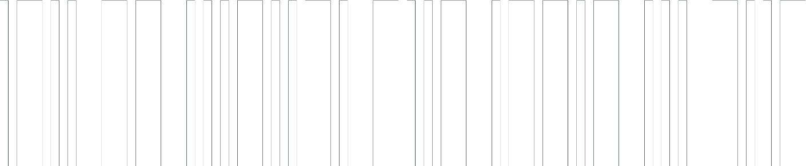
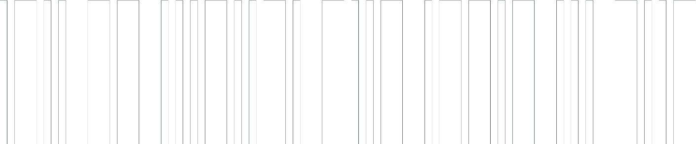

DARK BLOOD
BITE ME
ENHYPEN
4th Mini Album
El primer "grupo global creado por fans" del K-Pop
Introduccion
La poderosa banda de K-pop ENHYPEN hace un gran regreso con su cuarto miniálbum DARK BLOOD.
Después de las series 'BORDER', 'DIMENSION' y 'MANIFESTO', ENHYPEN presenta su cuarta entrega, la serie 'BLOOD', en la que la 'sangre' se usa como medio para desentrañar una historia de fantasía basada en la pregunta '¿qué pasaría si nos perdiéramos de vista?' La 'sangre' es el vínculo, la razón de ser y la prueba de que 'Tú' y 'Yo' estamos conectados por el destino.
Como castigo, el chico se ve obligado a borrar 'Tú' de su memoria y cae en las profundidades de la soledad.
Al descubrir la fatídica marca grabada en su cuello, el niño despierta por su "Tú" destinado y declara el sacrificio máximo por su inquebrantable vínculo de sangre. Cuidadosamente elaborado con el concepto único y la música de calidad de ENHYPEN, DARK BLOOD seguramente se convertirá en el álbum al que los oyentes están destinados.

Basado en la historia de la maldición de un niño provocada por la arrogancia, el despertar y el sacrificio máximo por un "Tú" destinado, DARK BLOOD consta de seis pistas con temas inherentemente diferentes:
"Fate", single principal "Bite Me", "Sacrifice (Eat Me Up)", "Chaconne", "Bills" y "Karma". Cada pista está entrelazada orgánicamente con la historia del niño y se conecta con el mensaje subrayado en DARK BLOOD.